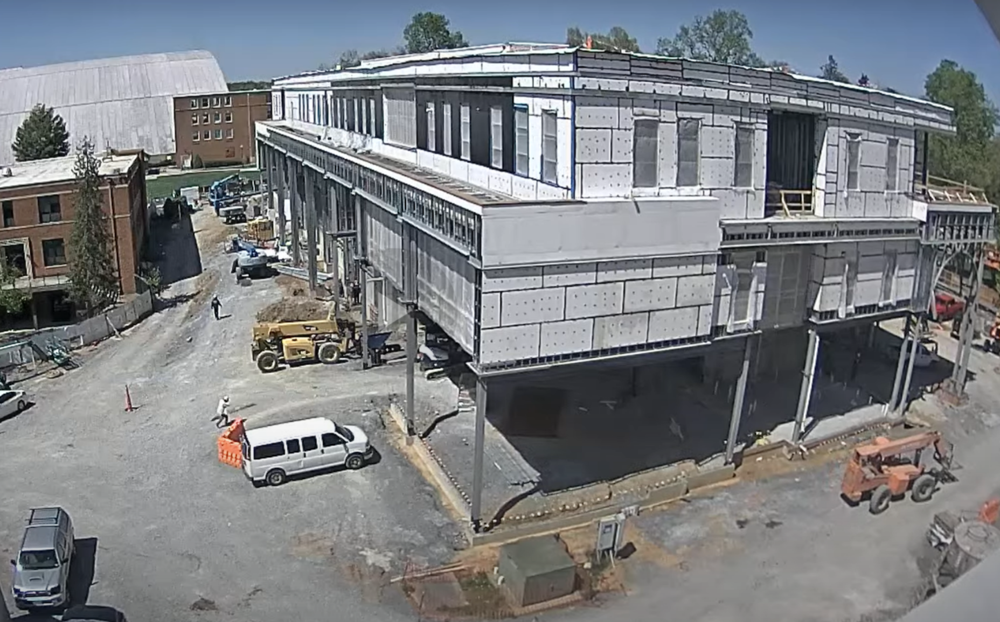

At 2:09 PM, two crew members were observed carrying a large board overhead and placing it near the blue boom lift. The task took approximately one minute. At this time, a total of 12 crew members were visible across various locations on the site.
On the third floor, a section under the wall was covered with plastic sheeting, secured in place by two buckets filled with black coating material to prevent it from shifting. At 2:14 PM, two crew members began applying the black coating to the wall. The plastic was used as a protective layer to prevent drips from falling onto the floor during the application process. Meanwhile, on the ground level, a white compact excavator was positioned next to the material pile. Using a tilting bucket, the operator pushed material from the peak of the pile down toward the base. The compact excavator completed the activity in 25 minutes. By 2:45 PM, the crew members on the third floor had completed applying the black waterproofing layer, making the total cycle time for this task approximately 31 minutes.
At 2:17 PM, the blue telehandler picked up a bin in preparation for transport. Before proceeding to its destination, a crew member stopped the operator for a conversation lasting about one minute, after which the crew member returned to the orange telehandler. The blue telehandler then continued and delivered the bin to the backside of the building at 2:24 PM.
At 2:54 PM, a green boom lift emerged from around the front right side of the building with one crew member already in the basket. It then stopped near the front right corner to pick up a second crew member. After loading, the lift readjusted to allow the orange telehandler to pass by. Once clear, the boom lift repositioned itself and raised both crew members to the ceiling level of the first floor to begin work.